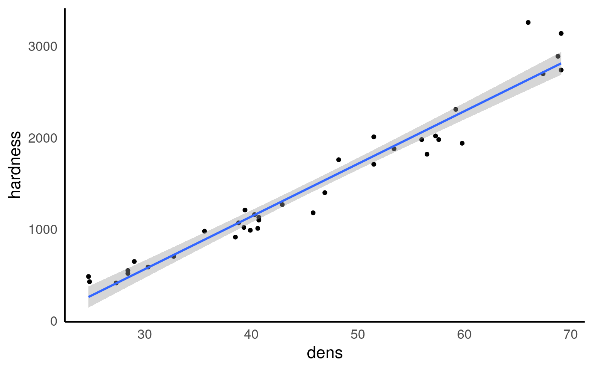

8 Regression
Set this up as a new R project, with organised folders.
This week’s assignment will be to submit this analysis, so make it clear and well organised!
Make sure to include some data checking in your script.
8.1 Introduction to Regression
So far we have used linear models for analyses between two ‘categorical’ explanatory variables e.g. t-tests. But what about when we have a ‘continuous’ explanatory variable? For that we need to use a regression analysis, luckily this is just another ‘special case’ of the linear model, so we can use the same lm() function we have already been using, and we can interpret the outputs in the same way.
8.2 Linear regression
Much like the t-test we have generating from our linear model, the regression analysis is interpreting the strength of the ‘signal’ (the change in mean values according to the explanatory variable), vs the amount of ‘noise’ (variance around the mean).
We would normally visualise a regression analysis with a scatter plot, with the explanatory (predictor, independent) variable on the x-axis and the response (dependent) variable on the y-axis. Individual data points are plotted, and we attempt to draw a straight-line relationship throught the cloud of data points. This line is the ‘mean’, and the variability around the mean is captured by calculated standard errors and confidence intervals from the variance.
The equation for the linear regression model is:
\[ y = a + bx \] You may also note this is basically identical to the equation for a straight fit line \(y = mx +c\).
Here:
y is the predicted value of the response variable
a is the regression intercept (the value of y when x = 0)
b is the slope of the regression line
x is the value of the explanatory variable
This formula explains the mean, you would need to include the unexplained residual error as a term to include our measure of uncertainty
\[ y = a + bx + e \]
The regression uses two values to fit a straight line. First we need a starting point, known as the regression intercept. For categorical predictors this is the mean value of y for one of our categories, for a regression this is the mean value of y when x = 0. We then need a gradient (how the value of y changes when the value of x changes). This allows us to draw a regression line.
A linear model analysis estimates the values of the intercept and gradient in order to predict values of y for given values of x.
8.3 Data
Here we are going to use example data from the Australian forestry industry, recording the density and hardness of 36 samples of wood from different tree species. Wood density is a fundamental property that is relatively easy to measure, timber hardness, is quantified as the ‘the amount of force required to embed a 0.444” steel ball into the wood to half of its diameter’.
With regression, we can test the biological hypothesis that wood density can be used to predict timber hardness, and use this regression to predict timber hardness for new samples of known density.
Timber hardness is quantified using the ‘Janka scale’, and the data we are going to use today comes originally from an R package SemiPar
Check the data is imported correctly and make sure it is ‘tidy’ with no obvious errors or missing data
8.4 Activity 1: Exploratory Analysis
Make a plot. Is there any visual evidence for a linear association between wood density and timber hardness?
8.5 Activity 2: Correlation - Generate Pearson’s R
Can you work out the code needed to generate Pearson’s R? - Try using a google search, then check your code and answer against the solution.
Hint try the rstatix package?
Correlation coefficients range from -1 to 1 for perfectly negative to perfectly positive linear relationships. The relationship here appears to be strongly positive. Correlation looks at the association between two variables, but we want to go further - we are arguing that wood density causes higher values of timber hardness. In order to test that hypothesis we need to go further than correlation and use regression.
8.6 Regression in R
We can fit the regression model in exactly the same way as we fit the linear model for Darwin’s maize data. The only difference is that here our predictor variable is continuous rather than categorical.
Be careful when ordering variables here:
-
the left of the ‘tilde’ is the response variable,
-
on the right is the predictor.
Get them the wrong way round and it will reverse your hypothesis.
This linear model will estimate a ‘line of best fit’ using the method of ‘least squares’ to minimise the error sums of squares (the average distance between the data points and the regression line).
We can add a regression line to our ggplots very easily with the function geom_smooth().
# specify linear model method for line fitting
janka |>
ggplot(aes(x=dens, y=hardness))+
geom_point()+
geom_smooth(method="lm")
Q. The blue line represents the regression line, and the shaded interval is the 95% confidence interval band. What do you notice about the width of the interval band as you move along the regression line?
The 95% confidence interval band is narrowest in the middle and widest at either end of the regression line. But why?
When performing a linear regression, there are two types of uncertainty in the prediction.
First is the prediction of the overall mean of the estimate (ie the center of the fit). The second is the uncertainly in the estimate calculating the slope.
So when you combine both uncertainties of the prediction there is a spread between the high and low estimates. The further away from the center of the data you get (in either direction), the uncertainty of the slope becomes a large and more noticeable factor, thus the limits widen.
8.6.0.1 Summary
Call:
lm(formula = hardness ~ dens, data = janka)
Residuals:
Min 1Q Median 3Q Max
-338.40 -96.98 -15.71 92.71 625.06
Coefficients:
Estimate Std. Error t value Pr(>|t|)
(Intercept) -1160.500 108.580 -10.69 2.07e-12 ***
dens 57.507 2.279 25.24 < 2e-16 ***
---
Signif. codes: 0 '***' 0.001 '**' 0.01 '*' 0.05 '.' 0.1 ' ' 1
Residual standard error: 183.1 on 34 degrees of freedom
Multiple R-squared: 0.9493, Adjusted R-squared: 0.9478
F-statistic: 637 on 1 and 34 DF, p-value: < 2.2e-16This output should look very familiar to you, because it’s the same output produced for the analysis of the maize data. Including a column for the coefficient estimates, standard error, t-statistic and P-value. The first row is the intercept, and the second row is the difference in the mean from the intercept caused by our explanatory variable.
In a test of difference, the intercept represented the mean of one group and the coefficient tells you how much higher or lower the average of one group is compared to another group. In regression analysis, the intercept is the value when the predictor variable is zero and the coefficient shows how much the response variable changes when the predictor variable increases by one unit, while keeping other predictors constant. This might mean the effect looks small - but it is cumulative.
In many ways the intercept makes more intuitive sense in a regression model than a difference model. Here the intercept describes the value of y (timber hardness) when x (wood density) = 0. The standard error is standard error of this calculated mean value. The only wrinkle here is that that value of y is an impossible value - timber hardness obviously cannot be a negative value (anti-hardness???). This does not affect the fit of our line, it just means a regression line (being an infinite straight line) can move into impossible value ranges.
One way in which the intercept can be made more valuable is to use a technique known as ‘centering’. By subtracting the average (mean) value of x from every data point, the intercept (when x is 0) can effectively be right-shifted into the centre of the data. This is known as mean-centered regression
8.6.1 Activity 3: Mean-centering
Can you use your data wrangling skills to mean centre the density predictor and produce a more realistic model intercept?
janka_centered <- janka |>
mutate(centered_dens = dens - mean(dens))
centered_model <- lm(hardness ~ centered_dens, data = janka_centered)
summary(centered_model)
Call:
lm(formula = hardness ~ centered_dens, data = janka_centered)
Residuals:
Min 1Q Median 3Q Max
-338.40 -96.98 -15.71 92.71 625.06
Coefficients:
Estimate Std. Error t value Pr(>|t|)
(Intercept) 1469.472 30.510 48.16 <2e-16 ***
centered_dens 57.507 2.279 25.24 <2e-16 ***
---
Signif. codes: 0 '***' 0.001 '**' 0.01 '*' 0.05 '.' 0.1 ' ' 1
Residual standard error: 183.1 on 34 degrees of freedom
Multiple R-squared: 0.9493, Adjusted R-squared: 0.9478
F-statistic: 637 on 1 and 34 DF, p-value: < 2.2e-168.6.1.1 Confidence intervals
Just like with the maize data, we can produce upper and lower bounds of confidence intervals:
- What would you say is the minimum effect size (at 95% confidence) of density on the janka scale?
Here we can say that at \(\alpha\) = 0.05 we think there is at least a 52.9 unit increase on the janka scale for every unit increase in density (\(\rho\)). Because our 95% confidence intervals do not span 0, we know that there is a significant relationship at \(\alpha\) = 0.05.
8.6.2 Effect size
With a regression model, we can also produce a standardised effect size. The estimate and 95% confidence intervals are the amount of change being observed, but just like with the maize data we can produce a standardised measure of how strong the relationship is. This value is represented by \(R^2\) : the proportion of the variation in the data explained by the linear regression analysis.
The value of \(R^2\) can be found in the model summaries as follows
Call:
lm(formula = hardness ~ dens, data = janka)
Residuals:
Min 1Q Median 3Q Max
-338.40 -96.98 -15.71 92.71 625.06
Coefficients:
Estimate Std. Error t value Pr(>|t|)
(Intercept) -1160.500 108.580 -10.69 2.07e-12 ***
dens 57.507 2.279 25.24 < 2e-16 ***
---
Signif. codes: 0 '***' 0.001 '**' 0.01 '*' 0.05 '.' 0.1 ' ' 1
Residual standard error: 183.1 on 34 degrees of freedom
Multiple R-squared: 0.9493, Adjusted R-squared: 0.9478
F-statistic: 637 on 1 and 34 DF, p-value: < 2.2e-16| Effect size | r^2 |
|---|---|
| small | 0.1 |
| medium | 0.3 |
| large | 0.5 |
8.7 Prediction
Using the coefficients of the intercept and the slope we can make predictions on new data. The estimates of the intercept and the slope are:
Now imagine we have a new wood samples with a density of 65, how can we use the equation for a linear regression to predict what the timber hardness for this wood sample should be?
\[ y = a + bx \]
Rather than work out the values manually, we can also use the coefficients of the model directly
But most of the time we are unlikely to want to work out predicted values by hand, instead we can use functions like predict() and broom::augment()
8.7.1 Adding confidence intervals
8.7.1.1 Standard error
8.7.1.2 95% Confidence Intervals
| dens | .fitted | .lower | .upper |
|---|---|---|---|
| 22 | 104.6471 | -21.53544 | 230.8297 |
| 35 | 852.2339 | 772.76915 | 931.6987 |
| 65 | 2577.4342 | 2468.78899 | 2686.0793 |
I really like the emmeans package - it is very good for producing quick predictions for categorical data - it can also do this for continuous variables. By default it will produce a single mean-centered prediction. But a list can be provided - it will produce confidence intervals as standard.
8.8 Activity 4
- Can you write a summary of the Results?
We analysed the relationship between wood density and timber hardness on the janka scale with a linear regression model and found that wood density is an excellent predictor of timber harndess (R^2 = 0.95). With an average wood density of 45.7, this produced a timber hardness of 1469 [1407, 1531] (mean [95% CI]) on the janka scale, and for every unit of density, timber hardness increases by 57.5 [52.9, 62.1] (t(34) = 25.24, p <0.001).
8.9 Summary
Linear model analyses can extend beyond testing differences of means in categorical groupings to test relationships with continuous variables. This is known as linear regression, where the relationship between the explanatory variable and response variable are modelled with the equation for a straight line. The intercept is the value of y when x = 0, often this isn’t that useful, and we can use ‘mean-centered’ values if we wish to make the intercept more intuitive. As with all linear models, regression assumes that the unexplained variability around the regression line, is normally distributed and has constant variance.
Once the regression has been fitted it is possible to predict values of y from values of x, the uncertainty around these predictions can be captured with confidence intervals.